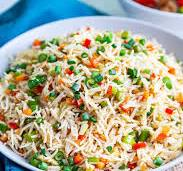
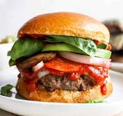
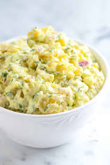

Jollof Rice
A classic West African rice dish cooked with tomatoes and spices.

Fried Rice
A savory dish of rice stir-fried with vegetables and seasonings.

Yam and Egg Sauce
Boiled yam served with a delicious egg and tomato sauce.

Pizza
A delicious baked flatbread typically topped with tomato sauce, cheese, and various toppings.

Burger
A savory sandwich consisting of a cooked patty of ground meat, placed inside a sliced bread roll or bun.

Potato Salad
A creamy and tangy salad made with boiled potatoes, mayonnaise, and seasonings.

Stir-Fried Noodles
A flavorful dish of noodles stir-fried with vegetables and protein in a savory sauce.